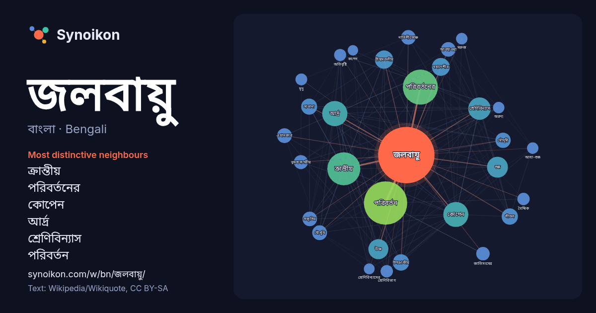

বাংলা · Bengali · popular word
জলবায়ু
“climate” · The words found around it in 1426 instances from Bengali Wikipedia, Wikiquote.

Most distinctive neighbours
- ক্রান্তীয় 95×
- পরিবর্তনের 78×
- কোপেন 71×
- আর্দ্র 60×
- শ্রেণিবিন্যাস 57×
- পরিবর্তন 52×
- গ্রীষ্মমণ্ডলীয় 41×
- শুষ্ক 39×
- উষ্ণ 36×
- মহাদেশীয় 34×
- উপক্রান্তীয় 34×
- সাভানা 32×
- মৌসুমী 28×
- মৌসুমি 27×
- নাতিশীতোষ্ণ 27×
- শীতল 26×
- ভূমধ্যসাগরীয় 24×
- আবহাওয়া 21×
- শ্রেণিবিভাগ 20×
- অতিবৃষ্টি 19×
× = how many times more often than in general Bengali Wikipedia text.
Most frequent neighbours
- পরিবর্তন 258
- পরিবর্তনের 168
- ক্রান্তীয় 149
- আর্দ্র 87
- কোপেন 86
- শ্রেণিবিন্যাস 69
- শুষ্ক 60
- উষ্ণ 55
- অঞ্চলে 46
- কারণে 46
- গ্রীষ্মমণ্ডলীয় 46
- প্রভাব 46
- মহাদেশীয় 44
- অঞ্চলের 38
- ধরনের 38
- অবস্থিত 37
- উপক্রান্তীয় 37
- শীতল 36
- সম্পর্কিত 35
- সাভানা 35
In context
- জলবায়ু (climate) : কোনো নির্দিষ্ট স্থানের সুদীর্ঘ সময়ের, সাধারণত ৩০-৩৫ বছরের আবহাওয়ার গড় বা সামগ্রিক অবস্থার হিসাবকে জলবায়ু বলে। সাধারণত বৃহৎ এলাকাজুড়ে Wikipedia snippets · জলবায়ু
- বাংলাদেশে জলবায়ু পরিবর্তনের প্রভাব বলতে বিশ্বব্যাপী জলবায়ু পরিবর্তনের ফলে বাংলাদেশে অস্থায়ী কিংবা স্থায়ী নেতিবাচক এবং ইতিবাচক প্রভাব পড়ার বিষয়টিকে Wikipedia snippets · বাংলাদেশে জলবায়ু পরিবর্তনের প্রভাব
- জলবায়ু ন্যায়বিচার হচ্ছে এমন একটি ধারণা যা জলবায়ু পরিবর্তনের সাথে মোকাবিলা করার জন্য জলবায়ু পরিবর্তন এবং দায়িত্বের সুফল ও ন্যায়বিভাজন, ন্যায্য ভাগাভাগি Wikipedia snippets · জলবায়ু ন্যায়বিচার
- বায়বীয় জলবায়ু ) এবং একটি বড় বিভাগ হিসাবে ১১ টি প্রধান জলবায়ুতে ভাগ করা হয়। উৎস : আলিসভের জলবায়ু শ্রেণিবিভাগ | তাপমাত্রা বৃষ্টি জলবায়ু | শীতকালীন Wikipedia snippets · কোপেন জলবায়ু শ্রেণিবিন্যাস
- পরিবেশ, বন ও জলবায়ু পরিবর্তন মন্ত্রী হলেন গণপ্রজাতন্ত্রী বাংলাদেশ সরকারের পরিবেশ, বন ও জলবায়ু পরিবর্তন মন্ত্রণালয়ের দায়িত্বপ্রাপ্ত মন্ত্রী। তিনি পরিবেশ Wikipedia snippets · পরিবেশ, বন ও জলবায়ু পরিবর্তন মন্ত্রী
- যুব জলবায়ু আন্দোলন (ইউএনজিও ― YouNGO) বা আন্তর্জাতিক যুব জলবায়ু আন্দোলন (আইওয়াইসিএম ― International Youth Climate Movement) বলতে যুব সংগঠনের একটি আন্তর্জাতিক Wikipedia snippets · যুব জলবায়ু আন্দোলন
- জলবায়ু পরিবর্তনজনিত আক্রান্তপ্রবণতা নির্ধারণ (সিভিএম) হলো মূল আন্তর্জাতিক কর্তৃপক্ষের প্যানেলগুলি একত্রিত করে বিশ্বের জনসংখ্যার উপর জলবায়ু পরিবর্তনের Wikipedia snippets · জলবায়ু পরিবর্তনজনিত আক্রান্তপ্রবণতা নির্ধারণ
- গ্রুপ এ-তে তিন ধরনের জলবায়ু রয়েছে: ক্রান্তীয় অতিবৃষ্টি অরণ্য জলবায়ু , ক্রান্তীয় মৌসুমি জলবায়ু এবং ক্রান্তীয় সাভানা জলবায়ু। তিনটি জলবায়ুর সবগুলোই Wikipedia snippets · ক্রান্তীয় জলবায়ু
More Bengali words
- অরণ্য
- আয়না
- ইতিহাস
- ঈশ্বর
- কাজ
- কুকুর
- ক্ষমতা
- খাদ্য
- গান
- গ্রীষ্ম
- ঘড়ি
- ঘণ্টা
- ঘোড়া
- ছায়া
- জননী
- জীবন
- ঝড়
- টাকা
- ট্রেন
- দারুচিনি
- দ্বীপ
- নক্ষত্র
- নীরবতা
- পরিবার
- পানি
- পাহাড়
- প্রকৃতি
- বাগান
- বিজ্ঞান
- বিড়াল
- বৃষ্টি
- ভাষা
- মধু
- মরুভূমি
- মানচিত্র
- মৃত্যু
- রাস্তা
- রুটি
- লবণ
- শরৎ
- শহর
- শিল্প
- শীত
- সত্য
- সময়
- সেতু
- সোনা
- স্বাস্থ্য
- হৃদয়
Precomputed on 2026-10-09 with default settings (±5 words, medium corpus). The interactive map can refresh it with live data.